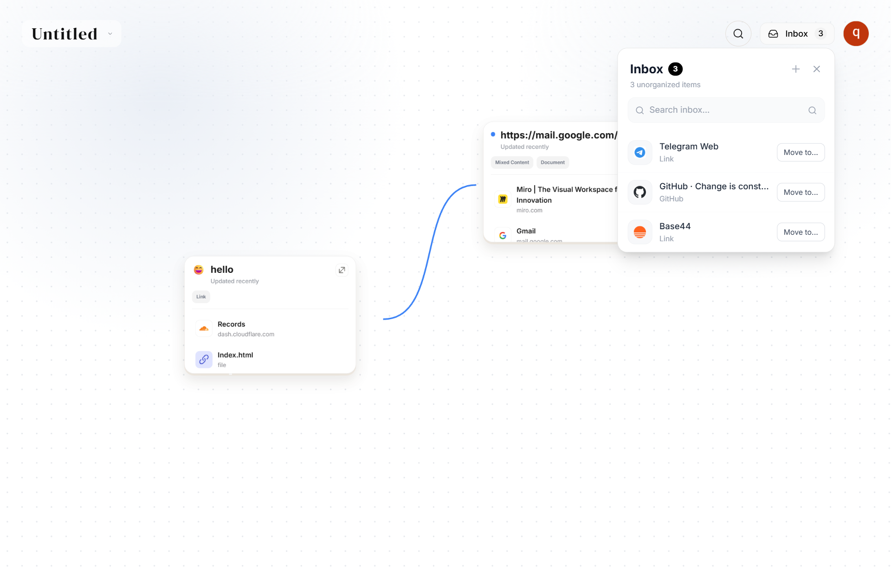

Think deeper.
Connect the dots.
A research workspace designed for the high-cognition needs of student researchers.
Keep the context. See the connections. Use your knowledge, continuously.

A workspace built around one problem
Real research doesn't happen in an afternoon. It happens over weeks—across PDFs, tabs, and unfinished notes. Over time, what disappears isn't the source. It's the context around it. Intoday keeps that thread intact, from the first source to the last footnote.
Collect
Capture materials from the web, PDFs, and images into a single, quiet space. Minimal visual noise ensures your research remains the primary focus.
Organize
Context over tags. Sort materials into functional research roles: Context, Technical, Notes, and Reference. A tactical approach to managing complex information.
The space between ideas.
Preserve the relationships between your materials over months of research. Map out
connections, trace sources, and build lasting insights.
Frequently Asked Questions
Intoday keeps the context around every source and makes relationships visible, so saved material continues to support your thinking over weeks and months.
Your research remains private by default. You control what is kept in your workspace and what you choose to share.
Yes. Share selected research materials and connections with collaborators while keeping the rest of your workspace focused.
Yes. Intoday also works for design researchers, writers, and anyone developing a complex body of work over time.
is a long conversation.
long-term
research.
Keep the thread intact.
Bring your sources, notes, and connections into one research workspace for long-term thinking.
Try the demoNo setup-heavy workflow. Just start exploring.